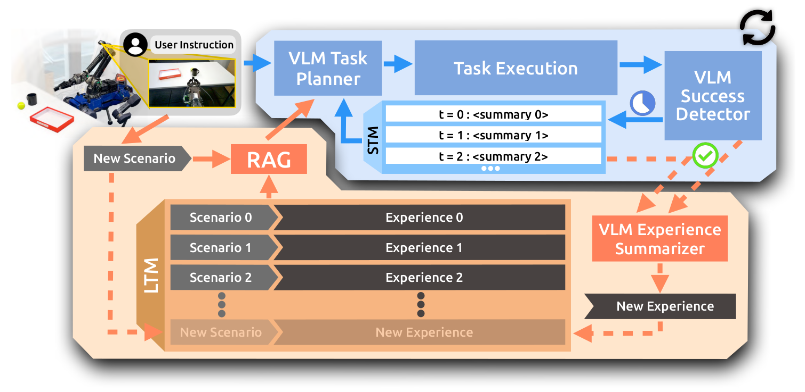
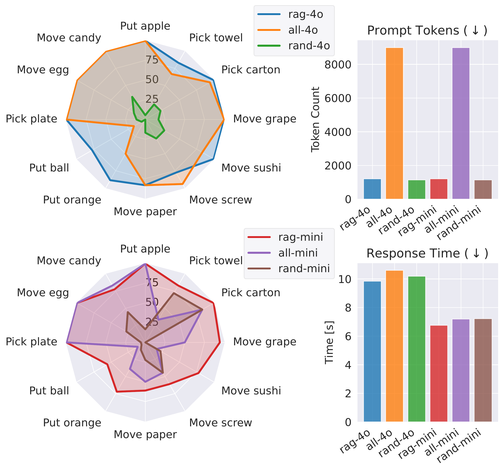

Large language models (LLMs) have emerged as the dominant paradigm for robotic task planning using natural language instructions. However, trained on general internet data, LLMs are not inherently aligned with the embodiment, skill sets, and limitations of real-world robotic systems. Inspired by the emerging paradigm of verbal reinforcement learning—where LLM agents improve through self-reflection and few-shot learning without parameter updates—we introduce PragmaBot, a framework that enables robots to learn task planning through real-world experience. PragmaBot employs a vision-language model (VLM) as the robot's “brain” and “eye”, allowing it to visually evaluate action outcomes and self-reflect on failures. These reflections are stored in a short-term memory (STM), enabling the robot to quickly adapt its behavior during ongoing tasks. Upon task completion, the robot summarizes the lessons learned into its long-term memory (LTM). When facing new tasks, it can leverage retrieval-augmented generation (RAG) to plan more grounded action sequences by drawing on relevant past experiences and knowledge. Experiments on four challenging robotic tasks show that STM-based self-reflection increases task success rates from 35% to 84%, with emergent intelligent object interactions. In 12 real-world scenarios (including eight previously unseen tasks), the robot effectively learns from the LTM and improves single-trial success rates from 22% to 80%, with RAG outperforming naive prompting. These results highlight the effectiveness and generalizability of PragmaBot.
The robot pushes away an obstructing container before grasping the apple after initial failure.
After cracking an egg while grasping, the robot learns to push fragile objects instead.
The robot autonomously uses a sponge as a tool to push a tiny candy after a failed push attempt.
The robot learns to remove the apple from the bowl before picking it up.
Recalls to clear obstructions before placing the orange on the plate.
Pushes fragile sushi instead of grasping, learned from egg experience.
Immediately uses a towel to push the screw, learned from candy-pushing experience.
Removes the apple on top before picking up the milk carton.
Clears the obstructing fan before grasping the tennis ball.
Pushes grapes toward the banana instead of picking them up and placing them.
Uses a brush as a tool to push crumpled paper.
Removes the orange on top before picking up the towel.
PragmaBot uses a VLM as both the task planner and success detector. When an action fails, the robot reflects on the failure and adapts its plan using short-term memory (STM). Once the task is completed, the experience is summarized and stored in long-term memory (LTM). For future tasks, retrieval-augmented generation (RAG) retrieves relevant past experiences to guide planning from the first attempt.

STM Self-Reflection
35% → 84%
Task success rate with short-term memory
LTM + RAG
22% → 80%
Single-trial success rate on 12 scenarios
Generalization
8 / 8
Unseen tasks improved with learned experience
| Task | CaP-V | PragmaBot |
|---|---|---|
| Put apple on plate (container obstructs) | 43% | 86% |
| Move tiny candy (sponge/towel nearby) | 22% | 67% |
| Move egg (open view) | 40% | 100% |
| Pick up bowl (apple inside) | 33% | 83% |
Each task is tested 5–10 times with two attempts allowed.
| Task | COME | PragmaBot |
|---|---|---|
| Put apple on plate (container obstructs) | 29% | 100% |
| Move tiny candy (towel nearby) | 11% | 78% |
| Move egg (open view) | 20% | 100% |
| Pick up bowl (apple inside) | 17% | 83% |
| Unseen tasks (generalization) | ||
| Put tennis ball in box (mug obstructs) | 29% | 71% |
| Put orange/ball on plate (fan blocks) | 10% | 80% |
| Move crumpled paper (brush nearby) | 25% | 63% |
| Move screw (towel nearby) | 0% | 86% |
| Move sushi (open view) | 14% | 71% |
| Move grape/cherry (open view) | 20% | 70% |
| Pick up box (apple on top) | 43% | 86% |
| Pick up towel (orange on top) | 50% | 75% |
Each task is tested 5–10 times. Top 4 rows are seen tasks; bottom 8 are unseen tasks demonstrating generalization.

RAG with gpt-4o achieves the highest first-action accuracy, outperforming both full LTM and
random retrieval. gpt-4o-mini also benefits from relevant memories, though gains are less
pronounced. Feeding the full LTM increases prompt length by 7.5× at substantially higher cost.
| Method | Self-reflection | Learning by exp. | Interactive replan | Creative tool use | Short-term memory | Long-term memory | Unified feedback |
|---|---|---|---|---|---|---|---|
| CaP | × | × | × | × | ○ | ○ | ○ |
| SayCan | × | × | × | × | ● | ○ | ○ |
| Inner Monologue | × | × | × | × | ● | ○ | ○ |
| RoboTool | × | × | × | ✓ | ○ | ○ | ○ |
| DROC | × | ✓ | × | × | ● | ● | ○ |
| REFLECT | ✓ | × | ✓ | × | ● | ○ | ○ |
| COME | ✓ | × | × | × | ● | ○ | ● |
| ReplanVLM | ✓ | × | ✓ | × | ● | ○ | ● |
| BUMBLE | ✓ | × | ✓ | × | ● | ● | ○ |
| PragmaBot | ✓ | ✓ | ✓ | ✓ | ● | ● | ● |
Capabilities are shown with ✓/×. Components are shown with ● (present) / ○ (absent). PragmaBot is the only method achieving all listed capabilities.
Detailed VLM planning and self-reflection logs for representative tasks.
@article{qu2026pragmatist,
title={A pragmatist robot: Learning to plan tasks by experiencing the real world},
author={Qu, Kaixian and Lan, Guowei and Zurbr{\"u}gg, Ren{\'e} and Chen, Changan and Mower, Christopher E and Bou-Ammar, Haitham and Hutter, Marco},
journal={IEEE Robotics and Automation Letters},
year={2026},
publisher={IEEE}
}